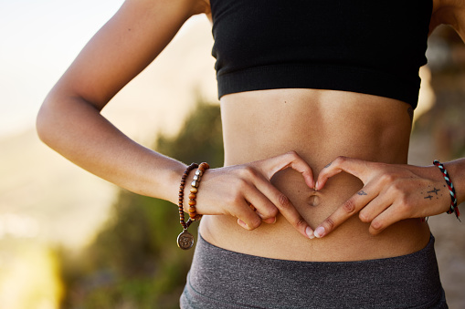
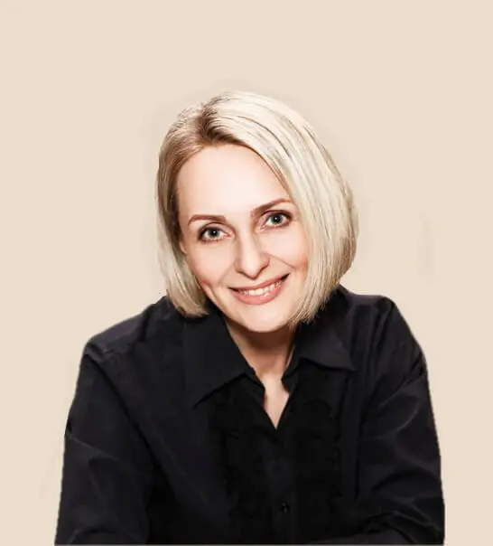

Многие проблемы с телом связаны с тем, что происходит внутри — с чувствами. Иногда ситуацию просто невозможно «переварить», а страх сжимает и скручивает живот сильнее любых слов. От этого напряжения и непрожитых чувств в первую очередь страдает ЖКТ.
Хотите чувствовать себя лучше?
Записаться на встречуЯ не заменяю вашего врача. Я работаю с тем, что остаётся за скобками анализов и таблеток — с напряжением нервной системы, из-за которого с симптомами работать сложнее или они возвращаются снова и снова.
Ольга Аксёнова · психолог, автор метода PROживаяЭто не метафора и не фигура речи. В стенке кишечника находится собственная, «энтеральная» нервная система — по плотности нервных клеток она сопоставима со спинным мозгом. Она работает во многом самостоятельно, но постоянно на связи с головным мозгом — через блуждающий нерв, гормоны и иммунные сигналы. Поэтому «сосёт под ложечкой» перед важным разговором — это не совпадение, а прямая физиология.
Когда напряжение не находит выхода — не проживается, а копится, — тело продолжает держать это в мышцах живота и кишечнике: спазм, нарушение стула, вздутие, боль без органической причины. Это то, что врачи иногда называют функциональным расстройством ЖКТ: реальная физическая боль, у которой нет видимой поломки в органе.
Лекарство снимает симптом на уровне органа. Но если нервная система по-прежнему живёт в постоянном напряжении, тело находит новый способ об этом сказать.
Хронический стресс повышает уровень кортизола и катехоламинов — они меняют моторику кишечника, усиливают висцеральную чувствительность и поддерживают воспалительные реакции слизистой. Это касается состояний, которые врачи объединяют под названиями «синдром раздражённого кишечника», «функциональная диспепсия» и похожих диагнозов — когда органическая причина не находит подтверждения, а симптомы реальны и мешают жить.
Не разговоры и не анализ причин. Я помогаю телу пройти путь, который оно давно пытается пройти само — от напряжения к освобождению.
Работаем без давления и без погружения в тяжёлые воспоминания. Только то, что откликается здесь и сейчас.
Ваше тело не «сломано» и не «слишком остро реагирует». Это нормальный ответ нервной системы — без стыда за симптомы.
Цель — не только снять напряжение сейчас, а научиться самостоятельно возвращать себе спокойствие, без таблетки и без меня рядом.
Это не обещание чуда и не гарантия — у каждого тела свой темп. Но вот что чаще всего отмечают те, кто регулярно проходит этот путь.

Спазм и тяжесть в животе ещё случались — но реже держались часами и отпускали быстрее.
Алиса В.Получилось замечать приближение обострения раньше — по телу, а не только по боли.
Сергей А.После курса у врача результат продержался дольше — не «откатило» через пару недель.
Кристина Б.Стрессовая ситуация перестала сразу отражаться спазмом — тело стало реагировать мягче.
Ольга Ф.Появилось понимание, что именно провоцирует обострение — не только в еде, но и в состоянии.
Светлана Н.Пришло ощущение, что можно помочь себе самостоятельно, а не только ждать, когда подействует таблетка.
Катя Ж.Метод не отменяет лечение и не гарантирует исчезновение симптомов — он снижает то напряжение нервной системы, которое мешает организму держать устойчивую ремиссию.

Психолог, поэт, художник, мама. Более 10 лет помогаю людям возвращаться к себе.
Этот метод родился из моего личного кризиса — потери мужа, бизнеса, здоровья. Я прошла через это сама — и нашла путь обратно.
Веду мягко и бережно. Моя задача — дать инструмент, который работает без меня: в любой момент, в любой ситуации, для любого человека.
С любовью, ОльгаИндивидуальные сессии онлайн. Первая встреча — это ещё и знакомство: разбираемся, как давно это началось, что уже пробовали, и с чего лучше начать именно вам.
Работа ведётся в координации с вашим лечащим врачом, а не вместо него.
Позвоните или напишите мне в любой мессенджер. Не нужно заранее готовить «правильный» запрос: расскажете, что беспокоит, своими словами, а дальше вместе решим, с чего начать.
Ваше здоровье в ваших руках!